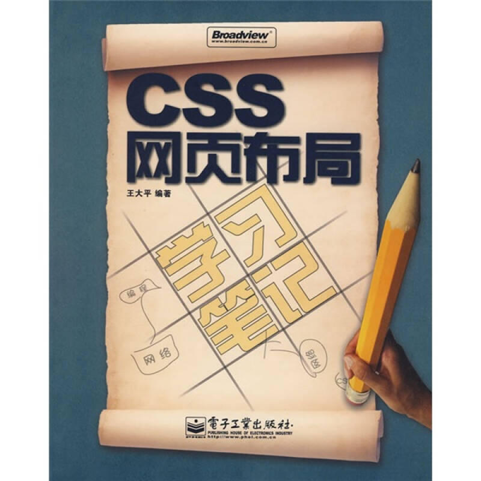

正常盒子与怪异盒子对比
鞋子鞋子鞋子鞋子鞋子鞋子鞋子鞋子鞋子鞋子鞋子鞋子鞋子鞋子鞋子鞋子鞋子鞋子鞋子鞋子鞋子鞋子鞋子鞋子鞋子鞋子鞋子鞋子鞋子鞋子鞋子鞋子鞋子鞋子鞋子鞋子鞋子鞋子鞋子鞋子鞋子鞋子
鞋子鞋子鞋子鞋子鞋子鞋子鞋子鞋子鞋子鞋子鞋子鞋子鞋子鞋子鞋子鞋子鞋子鞋子鞋子鞋子鞋子鞋子鞋子鞋子鞋子鞋子鞋子鞋子鞋子鞋子鞋子鞋子鞋子鞋子鞋子鞋子鞋子鞋子鞋子鞋子鞋子鞋子
弹性盒子水平分栏
 1990年，Tim Berners-Lee和Robert Cailliau共同发明了Web。1994年，Web真正走出实验室。[3] 从HTML被发明开始，样式就以各种形式存在。不同的浏览器结合它们各自的样式语言为用户提供页面效果的控制。最初的HTML只包含很少的显示属性。 随着HTML的成长，为了满足页面设计者的要求，HTML添加了很多显示功能。但是随着这些功能的增加，HTML变的越来越杂乱，而且HTML页面也越来越臃肿。于是CSS便诞生了。 1994年哈坤·利提出了CSS的最初建议。而当时伯特·波斯（Bert Bos）正在设计一个名为Argo的浏览器，于是他们决定一起设计CSS。 其实当时在互联网界已经有过一些统一样式表语言的建议了，但CSS是第一个含有“层叠”丰意的样式表语言。在CSS中，一个文件的样式可以从其他的样式表中继承。读者在有些地方可以使用他自己更喜欢的样式，在其他地方则继承或“层叠”作者的样式。这种层叠的方式使作者和读者都可以灵活地加入自己的设计，混合每个人的爱好。 哈坤于1994年在芝加哥的一次会议上第一次提出了CSS的建议，1995年的www网络会议上CSS又一次被提出，博斯演示了Argo浏览器支持CSS的例子，哈肯也展示了支持CSS的Arena浏览器。 同年，W3C组织（World WideWeb Consortium）成立，CSS的创作成员全部成为了W3C的工作小组并且全力以赴负责研发CSS标准，层叠样式表的开发终于走上正轨。有越来越多的成员参与其中，例如微软公司的托马斯·莱尔顿(Thomas Reaxdon)，他的努力最终令Internet Explorer浏览器支持CSS标准。哈坤、波斯和其他一些人是这个项目的主要技术负责人。1996年底，CSS初稿已经完成，同年12月，层叠样式表的第一份正式标准（Cascading style Sheets Level 1）完成，成为w3c的推荐标准。 1997年初，W3C组织负责CSS的工作组开始讨论第一版中没有涉及到的问题。其讨论结果组成了1998年5月出版的CSS规范第二版。[4-5]
旧版弹性盒子居中布局
排序(flex)
第1个
第2个
第3个
box-orient
第1个
第2个
第3个
flex-direction
第1个
第2个
第3个